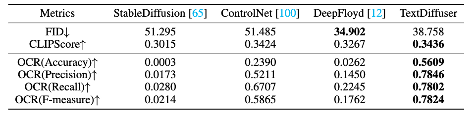

Diffusion models have gained increasing attention for their impressive generation abilities but currently struggle with rendering accurate and coherent text. To address this issue, we introduce TextDiffuser focusing on generating images with visually appealing text that is coherent with backgrounds. TextDiffuser consists of two stages: first, a Transformer model generates the layout of keywords extracted from text prompts, and then diffusion models generate images conditioned on the text prompt and the generated layout. Additionally, we contribute the first large-scale text images dataset with OCR annotations, MARIO-10M, containing 10 million image-text pairs with text recognition, detection, and character-level segmentation annotations. We further collect the MARIO-Eval benchmark to serve as a comprehensive tool for evaluating text rendering quality. Through experiments and user studies, we show that TextDiffuser is flexible and controllable to create high-quality text images using text prompts alone or together with text template images, and conduct text inpainting to reconstruct incomplete images with text. The code, model, and dataset will be available at https://aka.ms/textdiffuser.

TextDiffuser generates accurate and coherent text images from text prompts or together with template images, as well as conducting text inpainting to reconstruct incomplete images.
TextDiffuser consists of two stages. In the first Layout Generation stage, a Transformer-based encoder-decoder model generates character-level segmentation masks that indicate the layout of keywords in images from text prompts. In the second Image Generation stage, a diffusion model generates images conditioned on noisy features, segmentation masks, feature masks, and masked features (from left to right) along with text prompts. The feature masks can cover the entire or part of the image, corresponding to whole-image and part-image generation. The diffusion model learns to denoise features progressively with a denoising and character-aware loss. Please note that the diffusion model operates in the latent space, but we use the image pixels for better visualization.
Visualizations of whole-image generation compared with existing methods. The first three cases are generated from prompts and the last three cases are from given printed template images.

Visualizations of part-image generation (text inpainting) from given images.

The performance of text-to-image compared with existing methods. TextDiffuser performs the best regarding CLIPScore and OCR evaluation while achieving comparable performance on FID.

User studies for whole-image generation and part-image generation tasks. (a) For whole-image generation, our method clearly outperforms others in both aspects of text rendering quality and image-text matching. (b) For part-image generation, our method receives high scores from human evaluators in these two aspects.
@article{chen2023textdiffuser,
title={TextDiffuser: Diffusion Models as Text Painters},
author={Chen, Jingye and Huang, Yupan and Lv, Tengchao and Cui, Lei and Chen, Qifeng and Wei, Furu},
journal={arXiv preprint arXiv:2305.10855},
year={2023}
}